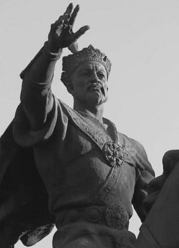

В прошлом выпуске рассказывалось про легкую жизнь Тохтамыша до тех пор, пока с юга не пришло наказание за наглость в лице Тамерлана.
Золотоордынский хан впал в суетливую печаль и, шустро собрав всех, кого нашел, порысил навстречу. Зная склонность бывшего начальника к методичным зачисткам вражеской местности, Тохтамыш резонно предположил, что чем меньше Тимур пройдет по землям Орды, тем меньше потом придется восстанавливать. Скорее всего, хан еще и рассчитывал на победу, не учитывая, что все последние шесть лет Тамерлан занимался планированием атаки.

Как говорится, конец был немного предсказуем. Встретив силы южан около реки Кондурча, монголы попытались нанести коронные удары с флангов, но не преуспели. Тамерлан с грацией и эффективностью носорога попер вперед и гнал разбитых татар еще километров 300 до Волги, где дорезал практически всех. Тохтамыш, крайне обиженный поражением (немалую роль в нем сыграло предательство половины его генералов, которые, почуяв в воздухе запах еще не изобретенного керосина, шустро перешли на сторону победителя) все-таки смог убежать обратно в Сарай, зализывать раны.
Тамерлан, удовлетворившись разгромом, ушел, а монгольский хан еще долго ходил как в воду опущенный — подростковые комплексы поднялись с прежней силой, и каждую ночь снились большие и страшные дяди, обижающие маленького Тохтамыша. Протосковав два года, хан озлобился еще больше и решил нагадить Тамерлану во что бы то ни стало. Договорившись с литовцами и аж с Египтом, дабы прижать Тимура как следует, в 1394 году монголы бодро ломанулись на владения южного государя. На этот раз — в Дагестан и Азербайджан, мимо города Дербент.
Известия об очередном проявлении глупости человеческой добрались до Тимура быстро. Тот, в принципе, даже войска не стал особо распускать после прошлой победы — знал, что в самое ближайшее время кто-нибудь еще захочет получить по башке, благо адекватные соседи в ту пору были в серьезном дефиците.
На этот раз Тамерлан решил довести дело до конца и немедленно продемонстрировал свое отношение к гуманности, Женевской конвенции и прочим категорическим моральным императивам. Около Дербента жило племя кайтаков, союзничавших с Тохтамышем. Тимур про это узнал, и поэтому кайтаки более не живут ни у Дербента, ни где бы то ни было еще.
Войска встретились около реки Терек. Описывать бой не будем. Скажем только, что Тамерлан, набирая скорость, двинулся дальше, на земли Орды, а разбитый наголову Тохтамыш вспомнил марш-броски юности и, понимая, что теперь суровый южный дед разозлился не на шутку, драпал аж до Тюмени.
В Орде настали очень неспокойные времена. Тимур прошелся по ней катком, уничтожая все в зоне видимости, от городов до мелких армий. Выжившие монголы с выпученными глазами забивались в норы и землянки.
Товарный состав, в силу своей огромной массы, один раз набрав скорость, потом долго тормозит. Этот бесхитростный житейский факт известен всем.
Разворотив все западные земли Орды, крымские колонии генуэзцев и вообще всех, кто попал под раздачу, войско начало тормозить, но по инерции зашло в Русь. Пройдя насквозь невезучее Рязанское княжество и заняв Елец, Тимур дошел до Москвы, оглядел охреневшие рожи на стенах, получил богатые дары, пожал плечами и пошел обратно. Смысла торчать в русских лесах ему не было никакого, господствовать так далеко от дома он не желал, да и вообще ему просто хотелось, чтобы на севере было спокойно.
Тамерлан ушел на юг, по пути добив монголов, выползших было из укромных мест. Жители Москвы, выдохнув, бросились поздравлять друг друга и немедленно приписали спасение города иконе Владимирской Божьей Матери. Еще одним поводом для праздника стало прекращение выплаты дани — в Орде ее стало как-то некому платить. Еще 14 лет с юга к землям Руси никто не приходил и денег не хотел.
В Москве праздновали, в Рязани оглядывали пепелища и думали переехать третий раз, Тохтамыш стучал зубами под Тюменью, Тамерлан крушил Индию и турок.
Чем закончились все эти события? Об этом — в заключительном выпуске про Золотую Орду.